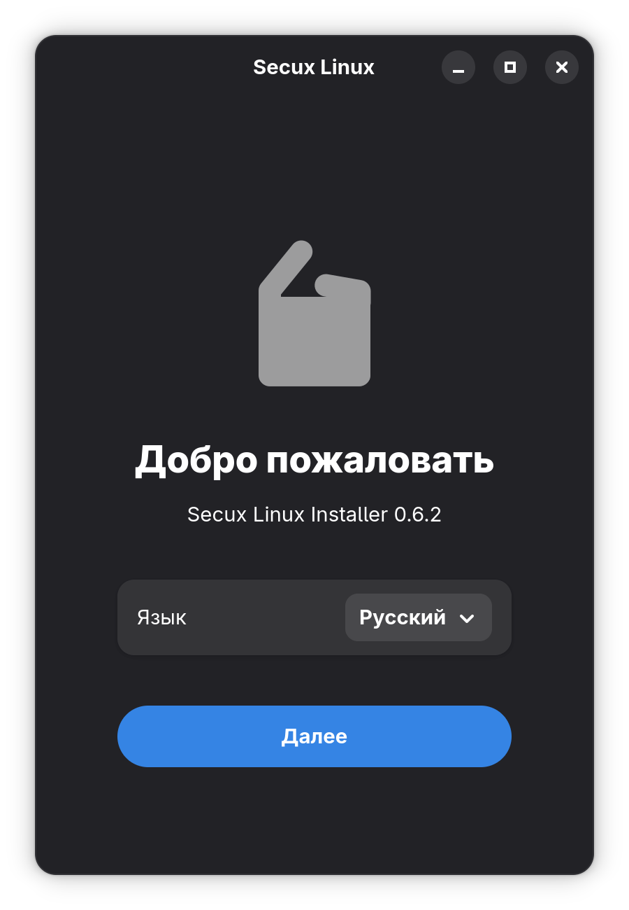

Установка с интернетом
2,50 ГБ · Пакеты загружаются во время установки.
Защищенный дистрибутив Linux, который интегрирует TPM 2.0, принципы Defense-in-Depth и собственные механизмы шифрования для защиты от изощренных атак.
2,50 ГБ · Пакеты загружаются во время установки.
7,00 ГБ · Все пакеты уже включены в образ.
Сохраните ISO и его подпись в одну папку. Импортируйте открытый ключ Kolbanidze с keys.openpgp.org по полному отпечатку.
gpg --keyserver hkps://keys.openpgp.org --recv-keys CE48F2CC9BE03B4EFAB02343AA0A42D146D35FCEВ этой папке выполните команду для своего образа. Убедитесь, что GPG подтверждает действительную подпись и отпечаток основного ключа совпадает с CE48 F2CC 9BE0 3B4E FAB0 2343 AA0A 42D1 46D3 5FCE.
Установка с интернетом
gpg --verify SecuxLinux-online-2026-11-23_17-00.iso.sigУстановка без интернета
gpg --verify SecuxLinux-offline-2026-11-23_17-00.iso.sig
In-Depth Protection дополняет шифрование LUKS2, создавая дополнительный слой криптографической защиты поверх TPM, защищая от аппаратных атак.
Проверка каждого этапа загрузки по умолчанию, защищая от Evil Maid атак. Если разблокировка привязана к TPM, нештатное изменение параметров загрузки потребует ключ восстановления.
Ядро linux-secux использует различные технологии защиты ядра для уменьшения поверхности атаки и устранения классов уязвимостей (CFI, memory hardening и т.д.). Его можно выбрать при установке.
| Компонент | Минимум | Рекомендуется |
|---|---|---|
| Процессор | x86_64 | Многоядерный x86_64 |
| Память | 1 ГБ | От 4 ГБ |
| Диск | 15 ГБ | SSD, 30 ГБ |
| Платформа | UEFI | UEFI, TPM 2.0 |
В установщике можно выбрать GNOME, KDE Plasma или консольную систему.